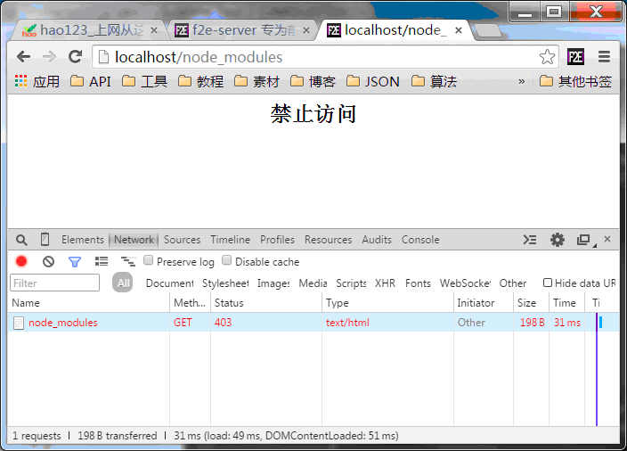

简介
基本的服务器功能, 除了按照指定的MIME输出请求数据, 有可能需要基本的文件夹列表展示、404页面配置，甚至多端口多服务等功能。
基本配置
基本服务器功能，配置localhost服务, 意味着： 开启服务器后在浏览器直接访问 http://localhost 将能看到对应root目录文件夹的展示
exports["localhost"] = {
"root": "e:\\node_modules\\f2e-server\\", //root 修改成自己的项目根目录
"port": 80, // 修改端口号 【默认80端口】
};
有的时候我们不只是关注一个项目文件夹, 如果需要配置多个项目文件夹, 需要复制多份配置文件分别改名字并且修改端口号即可:
exports["localhost"] = {
root: "E:\\"
};
exports["localhost1"] = {
root: "D:\\",
port: 8080
};
exports["localhost2"] = {
root: "E:\\doc\\",
port: 8043
};
这样就能分别通过 http://localhost,http://localhost:8080,http://localhost:8043 来分别访问每个项目
域名路由
f2e-server同样支持在同个端口按照不同的访问域名分别索引不同的项目服务, 如下：
exports["localhost"] = {
root: "E:\\"
};
exports["test.baidu.com"] = {
root: "D:\\"
};
exports["test.news.cn"] = {
root: "E:\\doc\\"
};
已经配置的多个服务使用了同一个端口[默认的80], 我们期望通过域名来分别索引就需要进行域名解析
因为本地域名解析需要修改系统的hosts文件来实现, f2e-server提供了一个hosts程序，快捷修改windows系统目录中的hosts文件【需要足够权限】
全局安装使用: f2eserver hosts, 如果是绿色非安装版点击 hosts.cmd
$ node hosts.js
hosts backup in hosts.bak and Instead of new local-hosts config
如果看到以上信息, 说明你的hosts自动配置完成，同时之前你正在使用的hosts配置备份在hosts.bak中
使用 node hosts.js reset 可以将备份文件还原
(全局安装 使用f2eserver reset还原) 非安装版点击 hosts-reset.cmd
推荐使用80端口的多域名的配置方式配置项目
使用过滤器(扩展功能, 可不做了解)
使用服务器过滤器, 可以批量地处理很多特例情况, 如下：
例 ： 访问服务器目录 /dist/* 下面的资源时, 需要获取 /src/ 下面的对应资源
exports["localhost"] = {
"root": "e:\\node_modules\\f2e-server\\",
"filter": {
get: function(req,resp){
req.url = req.url.replace(/\bdist\b/,"src"); //所有通过服务器的请求都可以在这里进行拦截和修改
}
}
};例 ： 使用手机访问页面进行重定向
exports.localhost = {
root: "E:\\",
filter:{
get: function(req, resp){
var reg = /mobile\/([^_]*?)\.html/; // 如果路径匹配, 且是手机UA, 追加 "_m" 进行重定向。
if( req.headers["user-agent"].match(/mobile/i) && req.url.match(reg) ){
resp.writeHead(302, {
location: req.url.replace( reg, 'mobile\/$1_m\.html' )
});
resp.end();
}
}
}
}; 例 ： 禁用服务器目录 /node_modules/*
exports["localhost"] = {
"root": "e:\\node_modules\\f2e-server\\",
"filter": {
get: function(req, resp){
if( req.url.match(/^[\\\/]+(config|build|upload)([\/\\])*$/) ){
resp.writeHead(403,{"content-type":"text/html"});
resp.end('<h2 style="text-align:center">禁止访问</h2>');
return false; // 设置返回值, 可以阻止请求相关功能继续执行.
}
}
}
};